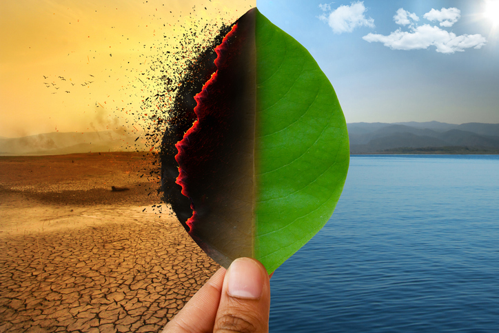

A Organização Meteorológica Mundial (OMM) afirma que, até outubro de 2023, a temperatura média da A temperatura média global em 1850/1900 foi 1,4°C acima. Assim, 2023 é considerado o mais quente em 174 anos de registros meteorológicos, superando os anos de 2016 com 1,29°C acima da média e :2020 tem 1,27°C acima do normal.
O documento também afirma que os anos de 2015 a 2023 foram os mais quentes da história. Além disso, a temperatura média global nos últimos dez anos – de 2014 a 2023 – foi de 1,19°C. acima da média de 1850/1900, a década mais quente de todos os tempos.
Os três principais gases de efeito estufa – dióxido de carbono, metano e óxido de carbono – terão suas concentrações aumentadas em 2022. Os níveis de nitroso atingiram níveis históricos. Os dados locais de 2023 indicam que os níveis dos três Os gases estão em constante aumento, o que aumenta a preocupação.
O ano de 2023 está entre os mais aguardados do Brasil desde os anos 60. As temperaturas ficaram acima da média em quatro meses consecutivos, de julho a outubro, sendo que o desvio (diferença entre o valor registrado e a média histórica) em setembro foi o maior desde 1961, com 1,6°C acima da média de 1991/2020.
Os meses mencionados acima foram marcados por calor extremo e eventos de onda em grande parte do país em 2023. calor, refletindo os efeitos do fenômeno El Niño, que é um aumento no aquecimento das águas do Oceano Pacífico acima da média Equatorial, que tende a aumentar a temperatura em diferentes áreas do planeta. Além disso, adicionais Eventos cada vez mais extremos, como o aumento da temperatura, foram causados por vários fatores. da superfície terrestre e dos oceanos em todo o mundo.
É importante observar que a parcial de novembro manteve a mesma tendência. Uma onda de calor maior e persistente, com temperaturas acima da média por doze dias consecutivos. Como ilustração disso, a 19 de novembro foi o dia em que a temperatura máxima em Araçuaí, Minas Gerais, chegou a 44,8°C. mais quente do que qualquer outro lugar no histórico de medições do Brasil. Oito ondas foram registradas desde o início de 2023. calor até agora.
Todos os seres vivos foram desenvolvidos para sobreviver em seu habitat natural, lugar onde encontram as coisas que precisam para sobreviver, como alimentos. Modificações nessa O ambiente pode ameaçar muitas espécies e até mesmo causar a extinção. Atualmente, é evidente como o aquecimento global afeta a biodiversidade.
Ao aumentar a temperatura média do planeta, vários Existe a possibilidade de que as coisas mudem. Entre as mudanças mais notáveis está o derretimento das calotas. polares e, como consequência, o aumento dos desertos, o aumento do volume de água nos oceanos e as mudanças nos regimes de chuvas, a ocorrência de tempestades e inundações e a proliferação de casos de formação de Como resultado, chegamos à conclusão de que o aquecimento global não é causado apenas por furacões, tufões e ciclones. só um aumento da temperatura e está relacionado a várias mudanças climáticas diferentes.
As consequências de todas essas mudanças climáticas podem incluir biodiversidade, pois cada espécie foi adaptada a um ambiente específico. Ao alterar isso ambiente, pois podemos matar algumas espécies, afetando diretamente a sobrevivência dessas espécies. e até mesmo acabar com eles.
Imagine a temperatura em que as calotas polares derretem. Isso é não apenas afeta o nível do mar, mas também afeta diretamente as comunidades locais. Isso é o que acontece com o urso polar, que vive no Ártico. Novos estudos mostram que o canibalismo entra. A população desses animais aumentou nos últimos anos devido ao aquecimento global. Este é comportamento estaria relacionado à dificuldade de capturar seus alimentos habituais como resultado da ação do degelo, forçando os ursos a buscar opções de comida.
É importante destacar que, embora o exemplo do urso polar seja bastante conhecido, o aquecimento global tem afetado muitos animais. Tempos secos e chuvosos A alternância é essencial para a sobrevivência de muitas espécies, como os anfíbios e os animais que Parte de seu ciclo ocorre no meio aquático, enquanto outra parte ocorre no meio terrestre. Durante a transmissão desses Como os ovos são colocados nesse ambiente, a presença de água é essencial para os organismos. Assim, uma seca afeta diretamente a reprodução. Além disso, ficar seco por muito tempo resseca a pele. sensibilidade dessas criaturas.
Além disso, o aquecimento global tem a capacidade de aumentar o número de epidemias em todo o mundo e, portanto, afetando uma variedade de espécies. Por exemplo, o mosquito Aedes aegypti é capaz de encontrar ambiente favorável à proliferação em temperaturas elevadas, aumentando a transmissão de doenças como dengue e zika em pessoas. Além do Aedes, existem muitos outros agentes e vetores etiológicos afetam a saúde de muitas espécies porque se reproduzem melhor em temperaturas altas.
Assim, é evidente que o aquecimento global afeta diferentes populações de várias maneiras. existem na Terra. A quantidade de espécies é enorme, e os exemplos mencionados são apenas alguns. ameaçadas pelas mudanças climáticas e pelo aumento da temperatura. Além disso, é importante destacar que um espécie pode ter um impacto significativo no ecossistema, pois pode afetar as cadeias alimentares como um todo.
Esse ciclo altera os níveis de vapor de água. na atmosfera e diminuem a probabilidade de esse recurso estar disponível. Isso sugere que a evaporação aumenta, modificando o escoamento, o regime de chuvas e a umidade do solo, e, portanto, disponível água para uso humano. Isso pode causar chuvas torrenciais em algumas áreas, ao passo que outras podem enfrentar condições extremamente secas, particularmente no verão.
As modificações feitas neste ciclo aumentam os níveis de vapor de água. na atmosfera, reduzindo a probabilidade de disponibilidade desse recurso. Portanto, a evaporação aumenta, alterando o escoamento, o regime de chuvas e a umidade do solo, e, como resultado, a disponível água para consumo humano. Isso pode resultar, entre outras coisas, em chuvas torrenciais em algumas áreas, ao passo que outras podem enfrentar severas condições de seca, especialmente no verão.
Além disso, as mudanças climáticas aumentam as temperaturas da água, o que leva à expansão das Zones mortas são áreas dentro dos oceanos que são inabitáveis para a vida marinha devido à falta de oxigênio.
Os problemas para a sociedade têm um efeito direto na disponibilidade de água para abastecimento da comunidade. Como resultado, a falta de recursos de saúde e a qualidade são colocadas em destaque. de vida das pessoas e no contexto social como um todo, em última análise, uma parte significativa das atividades econômicas é dependente da água.
Comece com a coleta seletiva, que ajuda a práticas e ao meio ambiente. rotineiramente mais sustentável. Você pode fazer opções úteis em casa para reduzir a geração de resíduos, como comprar itens resistentes e duráveis e repará-los em vez de descartá-los. Sobre o embalagens, procure por embalagens reutilizáveis ou recicláveis e escolha itens produzidos por empresas que programas socioambientais ou de tratamento pós-consumo, geralmente descritos com algum selo ecológico. No entanto, é importante manter a atenção para evitar cair nas ciladas do greenwashing.
Economizar água e energia elétrica pode e deve ser uma preocupação constante no seu dia a dia. Reduzir o consumo contribui tanto para as suas finanças, quanto para o meio ambiente, já que reduz a demanda de recursos naturais para o fornecimento de água e de luz. Para isso, você pode mudar seus hábitos com dicas simples que vão desde a utilização de lâmpadas, fluorescentes em vez de incandescentes até o reaproveitamento de água para lavar o quintal, por exemplo. Uma boa forma de começar a planejar a redução de gastos de energia é simulá-los com a calculadora de conta de luz do Idec. Assim ficará mais fácil tomar decisões, mudar hábitos e exigir seus direitos!
Embora nutricionistas e profissionais da saúde estejam cada vez mais preocupados com nossa dieta, o problema não é apenas comer, não apenas em si, mas no que é colocado no prato e despejado. Além de evitar que a comida seja desperdiçada, uma das Emigrar para feiras ou supermercados e aumentar o consumo de alimentos são mudanças significativas que você pode promover. agroecológicos, ou seja, feitos com agricultura familiar e sem uso de agrotóxicos. Alimentos que são vendidos em feiras não são embalados e sua duração é significativamente menor do que a dos comercializados em uma loja de varejo. Assim, a degradação ambiental e a emissão de poluentes ocorrem durante o menos transporte.
Ainda assim, andar é a maneira mais econômica de se locomover, pois é saudável, não poluente, econômico e permite conhecer e interagir com a cidade muito mais. Portanto, sempre que possível, opte por conduzir por caminhar por caminhos de até 3 km de distância. uma pesquisa publicada no periódico The Lancet, durante a Aumentar este tipo de deslocamento pode resultar em uma redução de aproximadamente 5% na emissão de partículas finas na atmosfera. Para começar a andar pela cidade, faça uma rota a percorrer, carregue o mínimo necessário e, caso não consiga percorrer longas distâncias, intercale caminhando com um transporte público.
Você deve perguntar e pesquisar sobre a origem dos produtos que consome e sempre verificar se os fabricantes não envolvidos em atividades ilegais como desmatamento e mineração, por exemplo. Aliás, você já parou para considerar que seus fundos O banco pode ser usado para vários tipos de negócios de empresas e governos, que podem ajudar a poluir e proteger ao mesmo tempo biodiversão? Isso significa que você deve usar seu dinheiro como moeda de troca para investir naquilo que você realmente gosta. Você acredita? O Guia dos Bancos Responsáveis ajuda você a entender como seu banco usa seus fundos. avaliar as principais instituições financeiras do país em questões como florestas e mudanças climáticas em seu site,gerar energia, entre outras coisas. Além disso, é possível fazer com que seu banco implemente políticas mais aceitáveis.